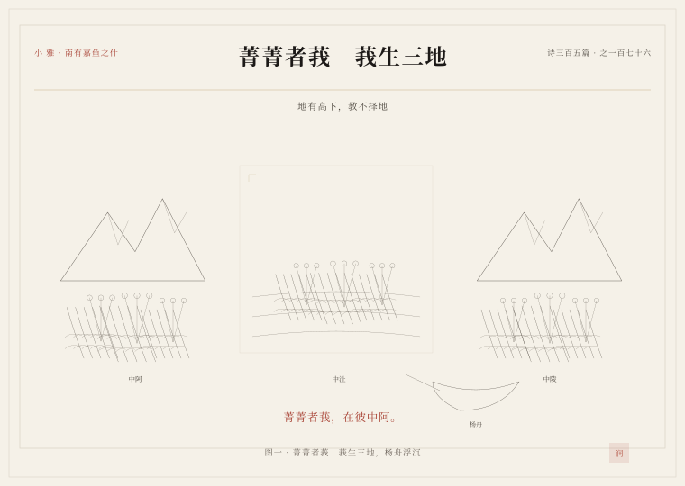
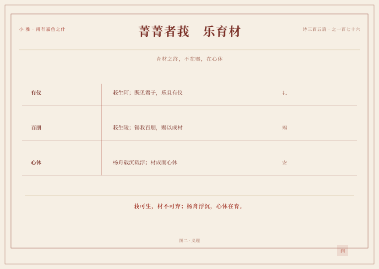

第一百七十六篇 菁菁者莪
小雅 · 南有嘉鱼之什 SJ176
朗读 · 普通话
依经文原文朗读，章次不读出；配古琴底乐，不改速、不加拖腔。全库同一音色（豆包 TTS），非播音员录制。
一 解题
诗三判：
- 谁在说：受育之人，或见育人者。见莪生于阿、沚、陵，既见君子，乐且有仪。
- 说什么事：四章。前三章以莪之所在起，写「乐且有仪」「我心则喜」「锡我百朋」；四章以杨舟浮沉起，写「我心则休」。
- 为何编在此：彤弓赏功，菁莪育材；赏已成之功，育未成之材。
小雅由赏入教。
《毛序》：「《菁菁者莪》，乐育材也。君子能长育人材，则天下喜乐之矣。」
朱子《诗集传》：「兴也。菁菁，盛貌。莪，萝蒿也。中阿，阿中也，大陵曰阿。仪，仪礼也。」二章：「中沚，沚中也。喜，喜见之也。」三章：「中陵，陵中也。锡我百朋，赐之厚也。」四章：「杨舟，杨木为舟。载沉载浮，舟浮沉也。休，安也。」
本库的看法：《菁菁者莪》不是一首宴乐诗，是一首「以莪生三地喻育材」的诗。
莪生阿、沚、陵，地不同而莪同；材有高下，教无择地。三章「锡我百朋」，是礼之厚；四章「杨舟载沉载浮」，是材之成，随水而安。育材之终，不在赐，而在心休。
须辨：莪是萝蒿，不是莪术；阿是大陵，不是山阿泛称；沚是水中小洲，不是止；百朋是贝，不是百友；杨舟是杨木舟，不是杨树舟。断语：莪可生，材不可弃；杨舟浮沉，心休在育。
先辨五事：「莪」是萝蒿，不是莪术；「阿」是大陵，不是山阿泛称；「沚」是水中小洲，不是止；「百朋」是贝，不是百友；「杨舟」是杨木舟，不是杨树舟。
二 经文
第一章
菁菁者莪，在彼中阿。既见君子，乐且有仪。
第二章
菁菁者莪，在彼中沚。既见君子，我心则喜。
第三章
菁菁者莪，在彼中陵。既见君子，锡我百朋。
第四章
泛泛杨舟，载沉载浮。既见君子，我心则休。
三 韵读
- 一章：莪、阿、仪，歌、支相叶。声和。
- 二章：莪、沚、喜，之部相叶。声喜。
- 三章：莪、陵、朋，蒸部相叶。声厚。
- 四章：舟、浮、休，幽部相叶。声安。
读法：三章「莪」同而地不同：阿高、沚下、陵高；地有高下，莪不择。
四章忽换杨舟，是「材成而载」，声由喜入安。
四 字义与名物
- 菁菁：盛貌。莪：萝蒿。中阿：大陵之中。君子：育人者。乐且有仪：乐而合礼。仪：仪礼。
- 中沚：水中小洲。喜：喜见。
- 中陵：大阜之中。锡：赐。百朋：百串贝。
- 泛泛：浮貌。杨舟：杨木舟。载沉载浮：且沉且浮。休：安。
五 今译
一章：菁菁的莪蒿，生在大陵之中。既见君子，乐而合礼。
二章：菁菁的莪蒿，生在水中小洲。既见君子，我心欢喜。
三章：菁菁的莪蒿，生在大阜之中。既见君子，赐我百朋。
四章：泛泛的杨舟，且沉且浮。既见君子，我心安定。
六 章旨
- 一章：莪在阿，是「高地」；乐且有仪，是「教成礼」；育材先育礼。
- 二章：莪在沚，是「低湿」；我心则喜，是「教得情」；礼成而情喜。
- 三章：莪在陵，是「高阜」；锡我百朋，是「教有赐」；赐以贝，不如赐以材。
- 四章：杨舟浮沉，是「材载」；我心则休，是「教安」；材成而心休，是育之终。
七 诗教
- 教不择地：莪生阿、沚、陵，皆能盛；择地而教，则材弃于野。
- 育材先礼：一章先说「有仪」，二章才说「喜」；无仪之喜，是纵。
- 赐以成材：百朋是赐，杨舟是载；赐其材，不赐其欲。
八 分寸与边界
- 不把「莪」读成莪术：莪是萝蒿；读成药，则「菁菁」无生。
- 不把「阿」读成山阿泛称：阿是大陵；泛称，则「中阿」无地。
- 不把「沚」读成止：沚是水中小洲；读成止，则莪生水中无据。
- 不把「百朋」读成百友：百朋是贝；读成友，则「锡」成交友。
- 不把「杨舟」读成杨树舟：是杨木为舟；读成树，则舟不成。
九 存疑
- 诗旨：毛序「乐育材」，朱子从之；一说「燕饮」。本库从育材。
- 「莪」：毛传「萝蒿」；从萝蒿。
- 「阿」：毛传「大陵曰阿」；从大陵。
- 「百朋」：毛传「百朋，百贝也」；从贝。
- 「休」：毛传「安也」；从安。
十 跨典
- 《诗经·小雅·南山有台》「邦家之基」；此篇育材，是基之本。
- 《论语》「有教无类」；此篇莪生三地，是无类。
- 《孟子》「得天下英才而教育之」；此篇「乐且有仪」，是育材之乐。
十一 双卡与图
六对：
| 莪（萝蒿） |
莪（莪术） |
| 阿（大陵） |
阿（山阿泛称） |
| 沚（水中小洲） |
沚（止） |
| 百朋（百贝） |
百朋（百友） |
| 杨舟（杨木舟） |
杨舟（杨树舟） |
| 休（安） |
休（休息） |

图一 · 菁菁者莪 莪生三地，杨舟浮沉

图二 · 菁菁者莪 育材有仪，心休在教